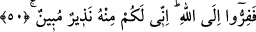

Birliği ortaklıktan mukaddestir.
Sayıdan bahsetme ki o Ferd’dir
Ferd için hiç aded bahis konusu olur mu?
Ahad’dir ve sayılmaktan uzaktır
Samed’dir, mahlûk gibi kavim ve kabilesi yoktur.
Bu âyet-i kerîmede Allah Teâlânın âlem-i ecsâm olan âlem-i mülkü âlem-i melekûta
yâni âlem-i ervâha eş olması için yarattığına da işâret edilmektedir. Alem-i mülkün
âlem-i ervâha eş olarak yaratılmasının zikr sebebi de; bu cismânî olan âlemin, melekût
âlemiyle, onun da ilâhî kudret eliyle ayakta kalabildiğini gösterip, insanların ancak
Allah Teâla’dan geldiğini ve tekrar O’na döndürüleceklerini bildirmek içindir.
50. O halde Allah’a koşun. Çünkü ben, size O’nun katından (gelmiş) açık bir
uyarıcıyım.
“O halde Allah’a koşun.” Yâni ey Rasûlüm! İş bu durumda olursa sen ve ashabın
O’nun ikabından kurtulup mükâfâtına erişmek için îman ve tâatle Allah’a firar edin,
yönelin! Burdaki “firar/kaçış” lafzı ile îmanın emredilmesinin ve tâate devamlılığın
getirilmesinin sebebi, insanların kaçmaları gereken öbür dünya azabına dikkat çekmek
içindir.
Bazı meşâyıh buranın takdirini şöyle yapmıştır: “Ey iki dünya endişesi ile Allah’tan
kaçanlar! Gelin sadece şevk, muhabbet ve tecerrüd/zühd sıfatları ile Allah’a kaçın ki O
sizin bu vücûd/benlik taalluklarınızı ve kendisinden başkalarıyla olan bağınızı tam
olarak koparsın. Kimin Allah’a yönelişi sağlam olursa, O’nun yanındaki yeri de sağlam
olur. Ve yine siz yalnız Allah’tan kaçıp yine O’na sığının ki O’nda fenâya kavuşasınız.”
Meşâyıhtan biri, bu sözün selef ulemâsı indinde sâbit bir tefsir olmadığı kanâatini
belirtmiştir.
Sehl (r.h.) de bu âyetin tefsirini; “mâsivallahdan Allah’a, mâsiyetten tâate, cehlden
ilme, azaptan rahmete ve O’nun gazabından hoşnudluğuna kaçın” şeklinde yapmıştır.
Muhammed b. Hâmid de bu âyet hakkında şöyle demiştir: Firarın gerçek anlamı
Rasûlullah (s.a.)’den rivâyet edilen “Sırtımı sana dayadım”[24] hadisi ile Hz. Âişe
vâsıtasıyla yine Efendimiz (s.a.)’e nisbet edilen “Sen’den yine ancak sana
sığınırım”[25] sözüdür. İşte bu hadisler, firarın en yüce mertebesinin Allah’tan yine
Allah’a doğru olduğunu göstermektedir.
Vâsitî de şöyle demiştir: Allah’a kaçışın mânâsı; insanların daha önce işlemiş
oldukları (günahlar) sebebiyle yine kendilerine âid olan zan, davranış ve nefislerine
geri dönmemeleri, onlara tevbe için Allah’a yönelmeleridir.